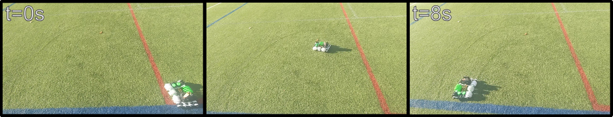

Inspection and exploration of unstructured environments requires robots capable of traversing diverse terrains while maintaining flexibility to navigate narrow passages. Archimedes Screw Drive (A.S.D.) robots demonstrate strong multi-terrain capability but they are inherently limited by their rigid structure, restrictinv their ability to maneuver through confined spaces. Conversly, continuum robots are highly flexible, but they lack the multi-terrain capability of an A.S.D. This paper introduces the Deformable Archimedes Screw (D.A.S.), a flexible 3D-printed archimedes screw that combines the flexiblity of a continuum robots with a A.S.D. To validate the functionality of the D.A.S. we developed the Deformable Archimedes Drive (D.A.D.), a robot with two parallel cable actuated D.A.S. which for propulsion and steering. Experimental results on turf demonstrate an average forward velocity of 0.400 m/s and an average lateral velocity of 1.268 m/s, with performance largely independent of screw length. By actively deforming the structure, the D.A.D. achieves a minimum turning diameter of 1.65 m. These results demonstrate the feasibility of integrating continuum deformation into Archimedes screw propulsion, establishing a foundation for future robots capable of robust, compliant navigation in complex, confined, and multi-terrain environments.